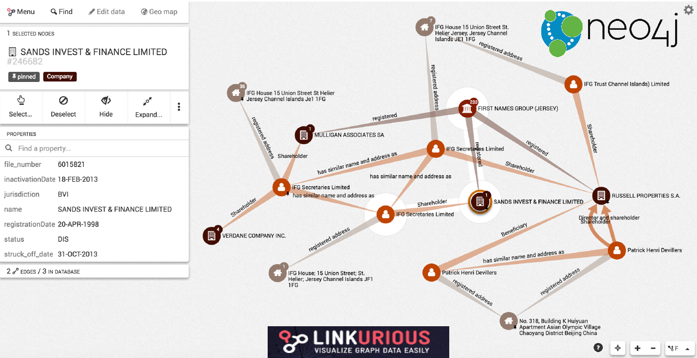

Plongez dans les panama papers avec Neo4j
Benoit Simard (@logisima)
Introduction
Benoit Simard
Consultant Neo4j
@logisima
Addicte aux graphes
Formateur
Les sources de données
Les sources de données de cette présentation proviennent des endroits suivants
Les présentations de l’ICIJ
Graph Connect Londre
Sud-web
L’histoire
L’origine

La volumétrie
C’est la plus large fuite de données de l’histoire, et de loin !
ICIJ
~190 journalistes dans plus de 65 pays
Equipe de 12 personnes à temps plein (USA, Costa Rica, Venezuela, Germany, France, Spain) dont 50% travaillent sur l’analyse des données.
Les outils
Le processus

Le cloud à la rescousse
Utilisation de Niux OCR pour récupérer le texte des documents, ainsi que d’autres outils pour établir des références croisées entre des millions de documents sur le nom des clients de Mossack Fonseca.
3 millions de fichiers x 10 secondes/fichier ⇒ 1 année
1 année / 35 serveurs ⇒ 1,5 semaine
Blacklight
Projet open-source de gestion des catalogues de bibliothèque, permettant de réaliser des requêtes solr
La stack technique
Extraction des données non structurées : Nuix OCR, ICIJ Extract (open source, Java: https://github.com/ICIJ/extract), leverages Apache Tika, Tesseract OCR and JBIG2-ImageIO.
Extraction des données structurées : un peu de Python
Base de données : Apache Solr (open source, Java), Redis (open source, C), Neo4j (open source, Java)
Application : Blacklight (open source, Rails), Linkurious (closed source, JS)
Linkurious

Comment lier les données ?
Des documents déconnectées

Des données connectées ?
C’est une histoire de contexte

(graph)-[:ARE]→(everywhere)
Le monde est un graph, tout est connecté !

les personnes, les lieux, les évènements
Les entreprises, le marché, les clients
les pays, l’histoire, les politiques
technologie, les réseaux, les machines, les utilisateurs
les applications, le code, les dépendances, l’architecture, le déploiement
…
Stocker & requêter
Le graphe

Modélisation en graphe
Les noeuds
Les entités du graphe
Peuvent avoir des propriétés
Peuvent avoir des labels (étiquettes)
Les relations
Relient des noeuds avec un type et une direction
Peuvent avoir des propriétés
Tout est pattern

Les étapes à l’analyse des données
Obtenir les documents
Classifier les documents (Scan, OCR, métadonnées)
Etablir une modélisation avec les entités, leurs relations et les propriétés
Développer des analyseurs, des parseurs, des règles permettant de récupérer les noms des entités
Parser les documents et stocker les données trouvées ainsi que les méta-données
Déduire les relations entre les entités (grace au contexte)
Calculer les similitudes, trouver les realtions transitivités, triangulaire
Analyser (cypher) et explorer (Linkurious)
Les Panama Papers
Le modèle

Modèle simpliste (4 entités et 5 relations)
On ne connait que le modèle publié
Il manque : les documents, les metadatas, les relations familliales
Les connections aux données publiques (opendata)
Contient des doublons
Les informations de relation sont stockées sur les entités
Exemple : Président Azerbaijan - Ilham Aliyev
Pour aller plus loin
Suivez le guide
A taper dans le browser Neo4j
Chargez les données !
En savoir plus
Neo4j Blog
ICIJ
SZ
Guardian
Merci
Des questions ?
Twitter: Suivez les comptes @neojFr & @neo4j
Google group : Avec les groupes Neo4jFr & Neo4j
Stackoverflow : avec les tags neo4j & cypher